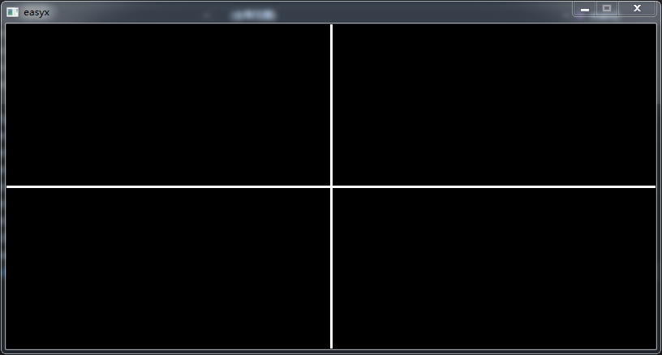

最近想玩图形界面，又没时间学 Windows API、MFC、QT 这些，听说 EasyX 这个图形库（基于 C++）很方便内容也少，便来学学。
第一节，绘制线条
库函数：
-
HWND initgraph(int width, int height, int flag)
绘图窗口，前两个参数是宽、高，第三个是规定窗口的特性（四个值，NULL、NOCLOSE、NOMINIMIZE、SHOWCONSOLE，依次是禁用关闭按钮、禁用最 小化、保留原控制台窗口，三个值可同时存在，用位运算符 | 结合即可，默认 NULL）。返回值是窗口句柄。
- void line(int x1, int y1, int x2, int y2)，画一条直线，参数是两点的坐标。
- void closegraph()，关闭窗口，无参数。
作业：画个“十”字。
#include<graphics.h>
#include<conio.h>
#include<stdio.h>
int main()
{
initgraph(800, 400); //宽 800 高 400 的窗口
line(0, 199, 800, 199); //横线
line(0, 200, 800, 200);
line(0, 201, 800, 201);
line(399, 0, 399, 800); //竖线
line(400, 0, 400, 800);
line(401, 0, 401, 800);
getchar(); //等待输入，避免一闪即逝
closegraph(); //关闭窗口
return 0;
}

第二节，学会单步执行调试程序
目标：学会单步执行。
VS2015 单步调试：
- 将 VS 窗口缩小并移动到屏幕一边，能看到代码就行。
- 按一下 F10（单步执行），控制台窗口出现，这时能看到 VS 里代码的行数旁边出现个黄色小箭头，它指示的是将要执行的代码。
- 移动 VS 窗口和控制台窗口，相互间不要有遮盖，便于观察。
- 切回 VS 的窗口，每次按 F10 会执行箭头指向的代码，当程序需要获取输入时编译器会自动切换到程序的窗口内，输入完毕按回车后又会自动切回编译 器。
- 观察完主要步骤后，剩余部分不想看可直接按 F5 执行剩余部分，结束
作业：单步执行上一次的作业。
第三节，更多绘图语句
目标：学会更多绘图语句。
图形绘制函数：不用死记名字，了解哪些图形可被绘制就好，名字用的时候再查。
- void linerel(int dx, int dy)，从“当前点”开始画直线，参数分别是沿 x、y 轴 偏移的距离。
- void lineto(int x, int y)，从“当前点”画直线到“目标点”，参数是“目标点”的坐 标。
-
void polyline(const POINT *points, int num)
画多条直线，第一个参数是结构体数组，第二个参数是结构体数组的长度，POINT 这个结构包含 x、y 两个 long 型成 员表示一个点的坐标，从下标 0 开始，每两个数组元素画一条直线，若最后只剩一个点便画一个点。
- void moveto(int x, int y)，确定“当前点”位置，有些绘图函数从“当前点”开始， 参数即坐标。
- void moverel(int dx, int dy)，移动“当前点”，dx、dy 分别代表从目前位置移 动多少单位。
- void circle(int x, int y, int radius)，空心圆，x、y 是圆心，第三个是半 径，还有fillcircle、solidcircle 分别画实心圆、实心无边框圆，最后是 clearcircle 用背景色清空圆形区域，这四个函数参数都一样。
- void ellipse(int left, int top, int right, int bottom)，椭圆，该函数 采用外切矩形描述椭圆，四个参数依次是椭圆外切矩形的左上角 x 坐标、左上角 y 坐标、右下角 x 坐标、右下角 y 坐标，所以当外接矩形为正方形时可以画 圆，此外，fillellipse、solidellipse、clearellipse 依次是画实心椭圆、实心无边框椭圆、使用背景色清空椭圆。
- void arc(int left, int top, int right, int bottom, double stangle, double endangle)， 椭圆弧，六个参数是外接矩形的两点坐标、圆弧起始角的弧度、圆弧终止角的弧度。
- void pie(int left, int top, int right, int bottom, double stangle, double endangle)， 椭圆扇形，六个参数和椭圆弧一样，此外还有 fillpie、solidpie、clearpie 依次是实心 椭圆扇形、实心无边框椭圆扇形、清除椭圆扇形。
- void putpixel(int x, int y, COLORREF color)，画点，color 指定颜色。
- void polygon(const POINT *points, int num)，多边形，第一个参数是点的数 组，第二个是数组长度，此外还有 fillpolygon、solidpolygon、clearpolygon 依次是实心多边形、实心无边框多边 形、清除多边形。
- void rectangle(int left, int top, int right, int bottom)，矩形，参数 是左上角、右下角的坐标，此外还有 fillrectangle、solidrectangle、clearrectangle 依次是实心矩形、实心无边 框矩形、清除矩形。
- void roundrect(int left, int top, int right, int bottom, int ellipsewidth, int ellipseheight)， 圆角矩形，前四个是矩形坐标，后两个是椭圆角的宽、高。此外还有 fillroundrect、solidroundrect、 clearroundrect 依次是实心圆角矩形、实心无边框圆角矩形、清除圆角矩形。
- void polybezier(const POINT *points, int num)，画多条三次方贝塞尔曲线，
第一个参数是三次方贝塞尔曲线的坐标点，第二个参数是坐标点的数量。
每条三次方贝塞尔曲线由 4 个点构成：起点、控制点1、控制点2、终点。贝塞尔曲线从起点画向终点，形状受控制点 1 和控制点 2 影响。下一条贝塞尔曲线的起点是前一条的终点。如果希望前后两条贝塞尔曲线的连接点平滑，要确保这三个点在同一条直线：前一条的控制 点 2、前一条的终点（后一条的起点）、后一条的控制点 1。这个图案不会被填充。因为后一条贝塞尔曲线的起点与前一条的终点相同，所以 必须确保 (num - 1) % 3 == 0。
- getheight、getpixel、getwidth、getx、gety获取信息函数，依次是绘图区高度、点的颜色、 绘图区宽度、当前点 x 坐标、当前点 y 坐标，其中只有 getpixel 需要接收点的坐标，其余均无参数。
- void floodfill(int x, int y, COLORREF color, int filltype = FLOODFILLBORDER)，用于 填充不规则区域，前两个参数是区域内任意点坐标，第三个参数是填充区域边界的颜色。
颜色：
设置颜色有三种方式：颜色常量、RGB、十六进制数。
常用的颜色常量：
- BLACK，黑
- DARKGRAY，深灰
- BLUE，蓝
- LIGHTBLUE，亮蓝
- GREEN，绿
- LIGHTGREEN，亮绿
- CYAN，青
- LIGHTCYAN，亮青
- RED，红
- LIGHTRED，亮红
- MAGENTA，紫
- LIGHTMAGENTA，亮紫
- BROWN，棕
- YELLOW，黄
- LIGHTGRAY，浅灰
- WHITE，白
RGB：
可以自由配色。格式：RGB(r, g, b)，r / g / b 分别表示红、绿、蓝，范围都在 0 ~ 255。例如，RGB(255,0,0) 表示纯红色，红色和绿色配成黄 色，因此 RGB(255, 255, 0) 表示黄色。调色可以借助图像编辑软件（例如 PS）的调色板调，调好后直接将数值抄过来就行。
十六进制数：
与 RGB 等效，只是顺序反了，格式：0xbbggrr，例如 0x0000ff 和 RGB(255, 0, 0)) 是等效的。几个基本的颜色、样式设置函数：
- void setlinestyle(int style, int thickness = 1, const DWORD *puserstyle = NULL,
DWORD userstylecount = 0)，指定画线样式，参数依次是线的样式、线宽、自定义样式数组、数组长度。
样式宏有 PS_SOLID 线形为实线。PS_DASH：------------ PS_DOT：············ PS_DASHDOT：-·-·-·-·-·-· PS_DASHDOTDOT： -··-··-··-·· PS_NULL： 不可见。PS_USERSTYLE：自定义样式，由参数 puserstyle 和 userstylecount 指定。此外还有线形的附加选项， 可用位运算符 | 加到第一个参数中，PS_ENDCAP_ROUND 端点为圆形。PS_ENDCAP_SQUARE 端点为方形。PS_ENDCAP_FLAT 端点为平坦。 PS_JOIN_BEVEL 连接处为斜面。PS_JOIN_MITER 连接处为斜接。PS_JOIN_ROUND 连接处为圆弧。
- void setlinecolor(COLORREF color)，设置画线颜色。
- void setfillcolor(COLORREF color)，设置填充颜色。
- void setbkmode(int mode)，设置图案填充和文字输出时的背景模式，两种可选值， OPAQUE 当前背景色填充（默认），TRANSPARENT 透明。
- void setcolor(COLORREF color)，绘图前景色。
- void setbkcolor(COLORREF color)，绘图背景色，配套的有 cleardevice、clearcliprgn，前者用当前背景色清空屏幕并将当前点移至 (0, 0)、后者用当前背景色清空裁剪区的屏幕 内容。
- getlinestyle、getlinecolor、getfillcolor、getbkmode、getbkcolor，依次是获取当 前画线样式、画线颜色、填充颜色、图案填充和文字输出时的背景模式、绘图背景色。
作业：自己设想，绘制更丰富的图形内容，试着结合延时、清屏语句做出动态效果（注：在图形模式下，system("cls") 不管用，清屏要用 cleardevice）。
#include<graphics.h>
#include<conio.h>
#include<stdio.h>
#include<Windows.h>
void stg(POINT *p) //直行
{
for (; 1;)
{
if (p[3].y == 100 && p[3].x >= 200) //顶边右移
{
p[0].x++; //右移
p[3].x++;
}
else if (p[3].x == 600) //右边下移
{
p[0].y++; //下移
p[3].y++;
}
else if (p[3].y == 400) //下边左移
{
p[0].x--; //左移
p[3].x--;
}
else if (p[3].x == 100) //左边上移
{
p[0].y--; //上移
p[3].y--;
}
line(p[0].x, p[0].y, p[3].x, p[3].y); //画线
circle(p[3].x, p[3].y, 10); //头部
Sleep(5); //等待
cleardevice(); //使用背景色清空屏幕
if (p[3].y == 100 && p[3].x == 600) break; //顶边下转结束条件
else if (p[3].y == 400 && p[3].x == 600) break; //右边左转结束条件
else if (p[3].x == 100 && p[3].y == 400) break; //下边上转结束条件
else if (p[3].y == 100 && p[3].x == 100) break; //左边右转结束条件
}
}
void zx(POINT *p) //转向过程
{
if (p[3].y == 100 && p[3].x == 600) //顶边下转
{
p[1].x = 600; p[1].y = 100; p[2] = p[1];
}
else if (p[3].y == 400 && p[3].x == 600) //右边左转
{
p[1].x = 600; p[1].y = 400; p[2] = p[1];
}
else if (p[3].x == 100 && p[3].y == 400) //下边上转
{
p[1].x = 100; p[1].y = 400; p[2] = p[1];
}
else if (p[3].y == 100 && p[3].x == 100) //左边右转
{
p[1].x = 100; p[1].y = 100; p[2] = p[1];
}
for (; 1;) //转向
{
if (p[3].y < 400 && p[3].x == 600) //顶边下转
{
p[0].x++; //右移
p[3].y++; //下移
}
else if (p[3].x > 500 && p[3].y == 400) //右边左转
{
p[0].y++; //下移
p[3].x--; //左移
}
else if (p[3].y > 300 && p[3].x == 100) //下边上转
{
p[0].x--; //左移
p[3].y--; //上移
}
else if (p[3].x < 200 && p[3].y == 100) //左边右转结束条件
{
p[0].y--; //上移
p[3].x++; //右移
}
polyline(p, 4); //画线
circle(p[3].x, p[3].y, 10); //头部
Sleep(5); //等待
cleardevice(); //使用背景色清空屏幕
if (p[3].y == 200 && p[3].x == 600) break; //顶边下转结束条件
else if (p[3].x == 500 && p[3].y == 400)break; //右边左转结束条件
else if (p[3].y == 300 && p[3].x == 100)break; //下边上转结束条件
else if (p[3].x == 200 && p[3].y == 100)break; //左边右转结束条件
}
}
int main()
{
initgraph(800, 500); //绘制窗口
setcolor(0xAA0000); //设置前景色
setbkcolor(0x555555); //设置背景色
cleardevice(); //使用背景色清空屏幕
setlinestyle(PS_SOLID | PS_JOIN_ROUND, 10); //设置线条样式
POINT p[4];
p[0].x = 100; p[3].x = 200; //初始状态
p[0].y = p[3].y = 100; int i;
for (i = 0; i < 20; i++) //转 5 圈
{
stg(p);
zx(p);
}
closegraph(); //关闭窗口
return 0;
}
/*
思路：
利用清屏、延迟实现动画效果，动画主要分两个阶段：直行、转弯，这两部分都被封装为了函数，循环调用即可。
*/第四节，结合流程控制语句来绘图
流程控制语句大家都会，不写了。
文本相关库函数：
- void outtext(LPCTSTR str)、void outtext(TCHAR c)，在当前点输出字符串， 该函数会改变当前点至字符串末尾，所以连续调用该函数输出的字符串保持连续。
- void outtextxy(int x, int y, LPCTSTR str)、void outtextxy(int x, int y, TCHAR c)， 在指定位置输出字符串，前两个是起始点的坐标，第三个是字符或字符串，该函数不改变当前点。
- int drawtext(LPCTSTR str, RECT *pRect, UINT uFormat)、int drawtext(TCHAR c, RECT *pRect, UINT
uFormat)，在指定区域内以指定格式输出字符串。
第一个是字符或字符串，第二个是矩形指针，第三个接收一些宏用于指定文字在矩形内的显示，返回值是文字的高度，执行失败返回 0。 关于第二个参数，RECT 是个结构体，它包含矩形的左上、右下两点的坐标，第二个参数接收的就是该结构体的地址，第三个参数的宏有很多，常 用的有 DT_BOTTOM（调整文字位置到矩形底部，仅当和 DT_SINGLELINE 一起使用时有效）、DT_VCENTER（垂直居中，仅当和 DT_SINGLELINE 一起使用时有效）、DT_LEFT（左对齐）、DT_RIGHT（右对齐）、DT_TOP（顶对齐）、DT_SINGLELINE（使文字显示在一行。回车和换行符都无效）、 DT_CENTER（水平居中）、DT_END_ELLIPSIS（若字符串的末字符不在矩形内，会被截断并显示省略号。如果是一个单词而不是一个字符的末尾超出了 矩形范围，它不会被截断）、DT_EXTERNALLEADING（使行高包含行间距。默认的，行间距不包含在行高内）、DT_WORDBREAK（当文字超过右边界时自 动换行，回车符有效）、DT_WORD_ELLIPSIS（截去无法容纳的文字，并在末尾增加省略号）。
- void settextcolor(COLORREF color)，设置当前文字颜色。
- void settextstyle(const LOGFONT *font)、void settextstyle(int nHeight, int nWidth, LPCTSTR
lpszFace)、void settextstyle(int nHeight, int nWidth, LPCTSTR lpszFace, int nEscapement, int nOrientation, int
nWeight, bool bItalic, bool bUnderline, bool bStrikeOut)、void settextstyle(int nHeight, int nWidth, LPCTSTR lpszFace,
int nEscapement, int nOrientation, int nWeight, bool bItalic, bool bUnderline, bool bStrikeOut, BYTE fbCharSet, BYTE
fbOutPrecision, BYTE fbClipPrecision, BYTE fbQuality, BYTE fbPitchAndFamily)，设置当前字体样
式。
nHeight 指定高度、nWidth 指定字符的平均宽度，这俩如果为 0 则是自适应、lpszFace 字体名称、nEscapement 整个字符串的倾斜角度，单位 最小 0.1 度、nOrientation 每个字符的倾斜角度，单位最小 0.1 度、nWeight 字符的笔画粗细，范围 0 ~ 1000，0 表示默认粗细、bItalic 是否斜体，true / false、bUnderline 是否有下划线，true / false、bStrikeOut 是否有删除线，true / false、fbCharSet 指定字符 集(详见 LOGFONT 结构体)、fbOutPrecision 指定文字的输出精度(详见 LOGFONT 结构体)、fbClipPrecision 指定文字的剪辑精度(详见 LOGFONT 结构体)、fbQuality 指定文字的输出质量(详见 LOGFONT 结构体)、fbPitchAndFamily 指定以常规方式描述字体的字体系列(详见 LOGFONT 结构体)。font 指向 LOGFONT 结构体的指针。只要是本地操作系统有的字体都可以用，或者可以打开 word 查，里面 的字体直接把名字以字符串形式传到参数里就可以了。
- COLORREF gettextcolor()，返回当前文字颜色。
- void gettextstyle(LOGFONT *font)，获取当前字体样式，参数是被赋值的结构体 地址。
- int textwidth(LPCTSTR str)、int textwidth(TCHAR c)，获取该字符串实际占用的像素 宽度，参数可以是 char 型变量也可以是字符串首地址，返回值即宽度。
原型：
struct LOGFONT {
LONG lfHeight;
LONG lfWidth
LONG lfEscapement;
LONG lfOrientation;
LONG lfWeight;
BYTE lfItalic;
BYTE lfUnderline;
BYTE lfStrikeOut;
BYTE lfCharSet;
BYTE lfOutPrecision;
BYTE lfClipPrecision;
BYTE lfQuality;
BYTE lfPitchAndFamily;
TCHAR lfFaceName[LF_FACESIZE];
};
前八个就不说了，第九个 lfCharSet 指定字符集，有很多预定义值，这里只说 OEM_CHARSET 代表依赖本地操作系统字符集。最后一个 lfFaceName 是字
体名称，名称不得超过 31 个字符。如果是空字符串，系统将使用第一个满足其它属性的字体。其它参数不常用，照着文档设置一次就行了。
作业：
- 画围棋棋盘。
- 画中国象棋的棋盘。
- 画国际象棋的棋盘，看手册找到颜色填充语句，实现国际象棋棋盘的区块填充。
#include<graphics.h>
#include<conio.h>
#include<stdio.h>
#include<Windows.h>
#include"khs.c"
//画围棋、象棋、国际象棋的棋盘，国际象棋的棋盘用颜色填充语句，实现国际象棋棋盘的区块填充。
void hua(int x, int y) //画出象棋盘中“兵”、“炮”的位置标识
{
if (x > 60)
{
line(x - 4, y - 4, x - 16, y - 4); //左上
line(x - 4, y - 4, x - 4, y - 16);
line(x - 4, y + 4, x - 16, y + 4); //左下
line(x - 4, y + 4, x - 4, y + 16);
}
if (x < 620)
{
line(x + 4, y - 4, x + 16, y - 4); //右上
line(x + 4, y - 4, x + 4, y - 16);
line(x + 4, y + 4, x + 16, y + 4); //右下
line(x + 4, y + 4, x + 4, y + 16);
}
}
void wq(); //围棋
void xq(); //象棋
void gjxq(); //国际象棋
int main()
{
initgraph(700, 700); //绘制窗口
setcolor(0x000000); //设置前景色
setfillcolor(0x000000); //设置填充色
wq();
xq();
gjxq();
closegraph(); //关闭窗口
return 0;
}
void wq() //围棋
{
setbkcolor(0x75CBEF); //设置背景色
cleardevice(); //使用背景色清空屏幕
int x, y, temp; long long num = 1; char sc[22];
RECT jx; jx.left = 10; jx.right = 20;
for (x = y = 30, temp = 0; x <= 660; x += 35, y = x, num++) //画线与输出数字
{
if (x == 30 || x == 660) //根据条件设置线条宽度
setlinestyle(PS_SOLID | PS_ENDCAP_SQUARE, 4);
else if (x == 65)
setlinestyle(PS_SOLID | PS_ENDCAP_SQUARE, 2);
line(x, 30, x, 660); //竖线
line(30, y, 660, y); //横线
if (temp % 2 == 0)
settextstyle(18, 0, "微软雅黑"); //设置顶部字体样式
outtextxy(x-4, 10, czs(num, sc)); //顶部数字
sc[0] = '\0'; //初始化字符串 sc
jx.top = (long long)y - 12; //确定矩形坐标
jx.bottom = (long long)y + 18;
if ((++temp) % 2 == 1)
settextstyle(15, 6, "微软雅黑"); //设置左方字体样式
drawtext(numzhz(num, sc), &jx, DT_WORDBREAK); //左方简体中文
}
for (x = y = 135; x <= 660 || y <= 555; x += 210) //画点
{
if (x > 555)
{
y += 210;
x = 135;
}
fillcircle(x, y, 4);
}
getchar();
}
void xq() //象棋
{
setbkcolor(0x9AC0D2); //设置背景色
cleardevice(); //使用背景色清空屏幕
int x, y;
setlinestyle(PS_SOLID | PS_ENDCAP_SQUARE, 8); //设置宽度
line(47, 27, 633, 27); //画外边框
line(47, 683, 633, 683);
line(47, 27, 47, 683);
line(633, 27, 633, 683);
setlinestyle(PS_SOLID | PS_ENDCAP_SQUARE, 2); //设置宽度
for (y = 40; y <= 670; y += 70) line(60, y, 620, y); //画内部横线
for (x = 60; x <= 620; x += 70) //画内部竖线
if (x == 60 || x == 620) line(x, 40, x, 670); //两边的连续竖线
else //中间的断开竖线
{
line(x, 40, x, 320);
line(x, 390, x, 670);
}
for (x = 60; x <= 620; x += 140) //画出“兵”的位置标识
{
hua(x,250); hua(x, 460);
}
hua(130, 180); hua(130, 530); hua(550, 180); //画出“炮兵”位置标识
hua(550, 530);
line(270, 40, 410, 180); line(410, 40, 270, 180);
line(270, 670, 410, 530); line(270, 530, 410, 670);
settextstyle(54, 0, "华文楷体"); //设置字体样式
outtextxy(150, 325, "楚河"); outtextxy(430, 325, "漢界");
getchar();
}
void gjxq() //国际象棋
{
setlinestyle(PS_SOLID | PS_ENDCAP_SQUARE, 1); //线条样式
setbkcolor(0xFFFFFF); //设置背景色
settextstyle(20, 8, "微软雅黑"); //设置字体样式
cleardevice(); //使用背景色清空屏幕
int x, y, temp; char sc[20], c;
for (x = y = 70, temp = 8, c = 'a'; x <= 630; x += 70, y = x)
{
line(x, 70, x, 630);
line(70, y, 630, y);
if (x < 630)
{
outtextxy(55, y + 30, czs(temp, sc)); //两侧数字
outtextxy(640, y + 30, czs(temp--, sc));
outtextxy(x + 30, 45, c); //上下字母
outtextxy(x + 30, 635, c++);
}
}
for (y = 80, temp = 0; y <= 630; y += 70, temp++)
{
if (temp % 2 == 0) x = 150;
else x = 80;
for (; x <= 630; x += 140)
floodfill(x, y, 0);
}
getchar();
}
第五节，理解数学的重要性
目标：体会利用数学知识制作渐变等效果。
库函数：
- doublesin(double x)，三角函数，在 math.h 中，接收弧度值，角度转弧度公式：角度 * 圆周率 / 180
- doublecos(double x)，与 sin 相同。
作业：结合数学知识制作一些特效。
#include<graphics.h>
#include<conio.h>
#include<stdio.h>
#include<Windows.h>
#include<math.h>
#include"khs.c"
int main()
{
initgraph(700, 700); //绘制窗口
setcolor(0x00000FF); //设置前景色
setfillcolor(0x000000); //设置填充色
setbkcolor(0xFFFFFF); //设置背景色
cleardevice(); //使用背景色清空屏幕
int x, y, c, r; double p;
for (x = 0, c = 0; x < 233; x++, c = (int)(x * 255 / 233))
{
setcolor(RGB(c, 0, 0)); //设置前景色
line(x, 0, x, 700);
setcolor(RGB(0, c, 0)); //设置前景色
line(x + 233, 0, x + 233, 700);
setcolor(RGB(0, 0, c)); //设置前景色
line(x + 466, 0, x + 466, 700);
Sleep(15);
}
cleardevice(); //使用背景色清空屏幕
for (p = 0.5, r = 250; p < 6.78; p += 0.001)
{
x = (int)(350 - r * cos(p));
y = (int)(350 - r * sin(p));
if (p < 2.58)
setlinecolor(RGB(c, 0, 0));
else if (p > 2.58 && p < 4.71)
setlinecolor(RGB(0, c, 0));
else if (p > 4.71)
setlinecolor(RGB(0, 0, c));
line(350, 350, x, y);
Sleep(1);
}
setlinecolor(0xFFFFFF);
for (r = 145; r < 260; r++)
{
circle(350, 350, r);
Sleep(4);
}
getchar();
closegraph(); //关闭窗口
return 0;
}
第六节，实现简单动画
目标：利用延时、擦掉（清屏）图像，加上循环实现动画。
作业：实现多个在窗口边缘反弹的圆。
#include<graphics.h>
#include<stdio.h>
#include<stdlib.h>
#include<time.h>
#include<Windows.h>
#include<math.h>
#define BY(d) (d.x < (1000-r) && d.x > r && d.y < (650-r) && d.y > r)
#define PS(p) (int)(5 * sin(p*3.14 / 180))
#define PC(p) (int)(5 * cos(p*3.14 / 180))
void ft(); //反弹球
void ftone(POINT *d, double *p, int *c); //处理一次反弹
void zd(POINT x, int *c, int r); //逐渐增大
int main()
{
initgraph(1000, 650); //绘制窗口
setcolor(0x00000FF); //设置前景色
setfillcolor(0x000000); //设置填充色
setbkcolor(0x000000); //设置背景色
cleardevice(); //使用背景色清空屏幕
ft(); //反弹球
getchar();
closegraph(); //关闭窗口
return 0;
}
void zd(POINT x, int *c, int r) //逐渐增大
{
c[0] = rand() % 255; c[1] = rand() % 255; c[2] = rand() % 255;
for (; c[0] < 100 && c[1] < 100 && c[2] < 100;) //随机 R、G、B 三原色数值
c[0] = rand() % 255; c[1] = rand() % 255; c[2] = rand() % 255;
setlinecolor(RGB(c[0], c[1], c[2])); //随机颜色
setfillcolor(RGB(c[0], c[1], c[2]));
for (; r <= 50; r++) //逐渐增大
{
fillcircle(x.x, x.y, r);
Sleep(15);
}
}
void ftone(POINT *d, double *p, int *c) //处理一次反弹
{
if ((d->x >= 950 || d->x <= 50) && (d->y <= 50 || d->y >= 600)) //同时碰到两个边界的情况
*p += 180;
else if (d->x >= 950 || d->x <= 50) *p = 180 - *p; //左、右
else *p = -(*p); //顶部、底部
d->x += PC(*p), d->y += PS(*p);
for (; c[0] < 100 && c[1] < 100 && c[2] < 100;) //随机 R、G、B 三原色数值
c[0] = rand() % 255; c[1] = rand() % 255; c[2] = rand() % 255;
}
void ft() //反弹球
{
POINT d[10]; int r, c[60], i; double p[20];
srand((unsigned int)time(NULL)); //随机种子
for (i = 0; i < 10; i++) //创建多个静止圆
{
d[i].x = rand() % 800 + 100, d[i].y = rand() % 450 + 100; //随机坐标
zd(d[i], &c[3 * i], 10); //显示一个逐渐增大的圆
}
for (i = 0; i < 10; i++)
for (p[i] = (double)(rand() % 320 + 20); ((int)p[i] % 90) < 20 || ((int)p[i] % 90) > 70;)
p[i] = (double)(rand() % 320 + 20); //初始角度随机
for (r = 50; 1; ) //不断移动并反弹
{
setlinecolor(0x000000);
setfillcolor(0x000000);
for (i = 0; i < 10; i++) //擦圆
fillcircle(d[i].x, d[i].y, r);
for (i = 0; i < 10; i++) //对所有需要反弹的圆进行处理
if (!BY(d[i])) ftone(&d[i], &p[i], &c[3 * i]);
for (i = 0; i < 10; i++) //计算所有圆移动后的圆心坐标
d[i].x += PC(p[i]), d[i].y += PS(p[i]);
for (i = 0; i < 10; i++) //画圆
{
setlinecolor(RGB(c[3 * i], c[3 * i + 1], c[3 * i + 2])); //设置随机颜色
setfillcolor(RGB(c[3 * i], c[3 * i + 1], c[3 * i + 2]));
fillcircle(d[i].x, d[i].y, r);
}
Sleep(10);
}
}
/*
反弹圆，初始坐标随机生成，先在原地逐渐增大，然后再利用随机数随机生成移动角度，放在循环中移动，直到碰到窗口边缘（边界减半径）后再计
算反弹角度并改变其运行方向，窗口边缘可分为上下、左右两种情况。
*/
第七节，捕获按键，实现简单控制
库函数：
- int _kbhit(void)，在头文件 conio.h 中，作用是检查当前是否有键盘输入，若有则返回一个非 0 值，否则返 回 0。
- int _getch，从缓冲区读取一个字符，但不显示在屏幕上。
利用 _getch() 读取字符，即 char c = _getch()，然后根据其来判断要执行的操作，但程序执行到 _getch() 会等待输入，直到用户有按键才能继续执 ，然而游戏一般是不会因为等待输入而停止的，所以还要用 _kbhit() 判断当前是否有按键，等用户输入后才执行 _getch()，这样就不会造成阻塞，这里有一 个常用键值要记一下，ESC 的 ASCII 码是 27。
作业：上下的控制；边界检测；结合 _kbhit 实现惯性移动（即按一下方向键，圆就会一直向这个方向移动）注：上下左右等按键的控制，会返回 2 个字符。
#include<graphics.h>
#include<stdio.h>
#include<conio.h>
#include<stdlib.h>
#include<time.h>
#include<Windows.h>
#include<math.h>
#include"khs.c"
void background(); //画出背景
void js(int x, int y); //绘制一次角色
void tiao(int *x, int *y, char c); //跳跃
int main()
{
initgraph(1000, 650); //绘制窗口
setbkcolor(0xff8833); //背景色
cleardevice(); //背景色清屏
int x = 100, y = 450; //初始坐标
background(); //画出游戏背景
js(x, y); //绘制角色
char c, c2;
for (c = 0; c != 27;) //只要不为 Esc 便循环
{
if (_kbhit()) //判断是否有键盘操作
c = _getch(); //读取字符
switch (c) //根据字符采取操作
{
case 'w': //跳跃
tiao(&x, &y, c2); //传入上一个指令，实现左、右跳跃
c = c2; //回到上一指令，即继续左、右移动
break;
case 'a': //左移
setcolor(0xff8833); //设置前景色
setfillcolor(0xff8833); //设置填充色
fillrectangle(x, y - 40, x + 55, y); //擦掉现有角色
js(x -= 2, y); break;
case 'd': //右移
setcolor(0xff8833); //设置前景色
setfillcolor(0xff8833); //设置填充色
fillrectangle(x, y - 40, x + 55, y); //擦掉现有角色
js(x += 2, y); break;
case 's': break; //静止
}
c2 = c; //保存上一指令
Sleep(20); //延时
}
closegraph(); //关闭窗口
return 0;
}
void background() //画出背景
{
int y; double p;
settextcolor(0xffffff); //文字颜色
settextstyle(24,0,"楷体"); //文字样式
outtextxy(50, 30, "w、a、s、d 分别是跳起、左移、静止、右移，按 Esc 退出");
setcolor(0x11bb22); //前景色、用于绘制下部
for (y = 450; y < 650; y++) line(0, y, 1000, y); //下部分
setcolor(0x2222bb); //前景色、太阳边框颜色
setfillcolor(0x1111bb); //填充色、太阳内部颜色
fillcircle(960, 40, 150); //绘制太阳
setlinestyle(PS_SOLID, 20); //线样式、绘制太阳边的线条
setcolor(0x1111bb); //前景色、线条颜色
for (p = 210; p >= 70; p -= 19) //画出太阳边的线条
line(960 + (int)(170 * cos(p*3.14 / 180)), 40 + (int)(170 * sin(p*3.14 / 180)),
960 + (int)(210 * cos(p*3.14 / 180)), 40 + (int)(210 * sin(p*3.14 / 180)));
setlinestyle(PS_SOLID, 2); //还原线样式
}
void js(int x, int y) //角色
{
setfillcolor(RGB(220, 194, 171)); //设置整体填充色
setcolor(0x000000); //边框色
fillrectangle(x, y - 40, x + 55, y); //画整体
line(x, y - 30, x + 55, y - 30); //分隔上、下两部分
setfillcolor(RGB(220, 40, 33)); //设置填充色、用于填充上部
floodfill(x + 10, y - 37, 0); //填充上部
setlinestyle(PS_SOLID, 5); //设置线样式、用于画眼睛
line(x+9, y - 20, x + 20, y - 20); //两条眼睛
line(x + 33, y - 20, x + 45, y - 20);
setlinestyle(PS_SOLID, 2); //还原线样式
}
void tiao(int *x, int *y, char c) //跳起
{
int s, temp; //跳起高度 s、状态变量 temp
for (temp = s = 1; s > 1 || temp == 1;)
{
setcolor(0xff8833); //设置前景色、用于擦除
setfillcolor(0xff8833); //设置填充色、用于擦除
fillrectangle(*x, *y - 40, *x + 55, *y); //擦掉现有角色
if (temp == 1) //上升
{
if (c == 'a') //左跳
{
if (s < 50) //刚开始横向移动慢
js(--(*x), --(*y));
else //上部横向移动变快
js((*x) -= 2, --(*y));
}
else if (c == 'd') //右跳
{
if (s < 50)
js(++(*x), --(*y));
else
js((*x) += 2, --(*y));
}
else //原地跳
js(*x, --(*y));
s++;
}
else //下降
{
if (c == 'a')
{
if (s < 50)
js(--(*x), ++(*y));
else
js((*x) -= 2, ++(*y));
}
else if (c == 'd')
{
if (s < 50)
js(++(*x), ++(*y));
else
js((*x) += 2, ++(*y));
}
else
js(*x, ++(*y));
s--;
}
if (s >= 100 && temp == 1) temp++; //控制状态
Sleep((unsigned long)qg((2 * s / 3.0))); //求等待时间
}
}
第八节，绘图中的位运算
位运算主要分四种：非、且、或、异或。它和绘图有什么关系？例如，使用异或运算可以实现擦除图形后不破坏背景。
位运算的运算法则：- 非，对二进制按位取反，对应的运算符是 ~。如二进制： ~1101 = 0010，十进制表示就是：~13 = 2。
- 且，对于两个二进制，若对应位都为 1，该位结果为 1，否则该位为 0，对应运算符是 &。如二进制：1101 & 0110 = 0100，十进制表示就是：13 & 6 = 4。
- 或，对于两个二进制，除非二者对应位都是 0，该位结果为 0，否则该位为 1，对应运算符是 |。如二进制：0101 | 0110 = 0111，十进制表示就是：5 | 6 = 7
- 异或，对于两个二进制，只要对应位的数字不同，该位结果为 1，相同则该位为 0，对应运算符是 ^。如二进制：0101 ^ 1110 = 1011
位运算的应用很多，例如“且”和“或”在获取、设置标志位时经常使用，这里着重说下“异或”运算，它有一个重要的特性：(a ^ b) ^ b = a，即 a ^ b 两次 是它本身，一些简单加密用的就是异或的这个特性。关于绘图，假如 a 是背景图案，b 是将要绘制的图案，只要用异或方式绘图，连续绘两次，那么背景是不变 的。
API：
-
void setrop2(int mode)，设置前景色为二元光栅模式，即使用位运算来配色，具体有以下参数宏（常用的几个用红色标
注了出来）：
- R2_BLACK，绘制颜色为黑色。
- R2_COPYPEN，绘制颜色为当前设置的颜色（默认）。
- R2_MASKNOTPEN，绘制颜色 = 屏幕颜色 & (~ 当前颜色)。
- R2_MASKPEN，绘制颜色 = 屏幕颜色 & 当前颜色。
- R2_MASKPENNOT，绘制颜色 = (~ 屏幕颜色) & 当前颜色
- R2_MERGENOTPEN，绘制颜色 = 屏幕颜色 | (~ 当前颜色)
- R2_MERGEPEN，绘制颜色 = 屏幕颜色 | 当前颜色
- R2_MERGEPENNOT，绘制颜色 = (~ 屏幕颜色) | 当前颜色
- R2_NOP，绘制颜色 = 屏幕颜色
- R2_NOT，绘制颜色 = ~ 屏幕颜色
- R2_NOTCOPYPEN，绘制颜色 = ~ 当前颜色
- R2_NOTMASKPEN，绘制颜色 = ~ (屏幕颜色 & 当前颜色)
- R2_NOTMERGEPEN，绘制颜色 = ~ (屏幕颜色 & 当前颜色)
- R2_NOTXORPEN，绘制颜色 = ~ (屏幕颜色 ^ 当前颜色)
- R2_WHITE，绘制颜色 = 白色
- R2_XORPEN，绘制出的像素颜色 = 屏幕颜色 ^ 当前颜色
- SYSTEMTIME，结构体，用来存储系统时间。
- void GetLocalTime(SYSTEMTIME *lpSystemTime)，获取本地系统时间并赋值给结构体，相应的还有 GetSystemTime 函数，用于获取 UTC 时间，即本初子午线（经度零度）上的平均太阳时。
作业：使用异或模式绘制时钟。
#include<graphics.h>
#include<stdio.h>
#include<conio.h>
#include<stdlib.h>
#include<time.h>
#include<Windows.h>
#include<math.h>
#include"khs.c"
#define PI 3.1415926
#define PS(d,p) (int)((r - d)*sin(p*PI / 180))
#define PC(d,p) (int)((r - d)*cos(p*PI / 180))
void background(int r); //画出表盘背景
void zhizhen(int r); //画出一次指针并等待擦除
int main()
{
initgraph(600, 600); //初始化 600 x 600 的绘图窗口
int r = 265; char c; //半径 r
background(r);
for (c = 0; c != 27;)
{
if (_kbhit()) c = _getch(); //读取键盘操作
zhizhen(r); //画指针
}
closegraph(); //关闭窗口
return 0;
}
void background(int r) //画出表盘背景
{
double p; int num; char s[100]; //绘图角度 p、数字 num、临时字符串 s
setfillcolor(0x00FFFF); //设置表盘填充色
setbkcolor(0x00FFFF); //背景色
setcolor(0x000000); //前景色
fillcircle(300, 300, r); //画表盘
setlinestyle(PS_SOLID, 2); //线条样式
circle(300, 300, r - 11); //刻度盘
settextstyle(30, 0, "Gungsuh");
for (p = 90, num = 12; p >= -240; p -= 30)
{
line(300 - PC(25, p), 300 - PS(25, p), 300 - PC(10, p), 300 - PS(10, p));
outtextxy(290 - PC(40, p), 285 - PS(40, p), czs(num--, s));
}
}
void zhizhen(int r) //画出一次指针并等待擦除
{
SYSTEMTIME t; double p[3];
GetLocalTime(&t);
t.wHour %= 12;
if (t.wHour >= 3) p[0] = (t.wHour - 3) * 30 + t.wMinute / 2; //计算时针角度
else p[0] = (t.wHour + 12) * 30 + t.wMinute / 2;
if (t.wMinute >= 15) p[1] = (t.wMinute - 15) * 6 + t.wSecond / 10; //计算分针角度
else p[1] = t.wMinute * 6 + 270 + t.wSecond / 10;
if (t.wSecond >= 15) p[2] = (t.wSecond - 15) * 6;//计算分针角度
else p[2] = t.wSecond * 6 + 270;
setrop2(R2_XORPEN); //设置前景色为二元光栅模式
setcolor(0x00FF00); //前景色
setlinestyle(PS_SOLID, 13); //线条样式
line(300, 300, 300 + PC(150, p[0]), 300 + PS(150, p[0]));
setlinestyle(PS_SOLID, 9); //线条样式
line(300, 300, 300 + PC(110, p[1]), 300 + PS(110, p[1]));
setlinestyle(PS_SOLID, 5); //线条样式
line(300, 300, 300 + PC(60, p[2]), 300 + PS(60, p[2]));
Sleep(1000); //等待
setlinestyle(PS_SOLID, 13); //线条样式
line(300, 300, 300 + PC(150, p[0]), 300 + PS(150, p[0]));
setlinestyle(PS_SOLID, 9); //线条样式
line(300, 300, 300 + PC(110, p[1]), 300 + PS(110, p[1]));
setlinestyle(PS_SOLID, 5); //线条样式
line(300, 300, 300 + PC(60, p[2]), 300 + PS(60, p[2]));
}
第九节，捕获鼠标消息
捕获鼠标消息和捕获按键消息一样。对于按键，会先检查是否有按键，然后用变量保存按键，再根据该按键的值执行相应的程序。鼠标也是一样的。
库函数：
- bool MouseHit()，如果存在鼠标消息，返回 true；否则返回 false。
-
MOUSEMSG，是个结构体，用来存储有关鼠标的所有信息，其定义如下：
struct MOUSEMSG { UINT uMsg; // 当前鼠标消息 bool mkCtrl; // Ctrl 键是否按下 bool mkShift; // Shift 键是否按下 bool mkLButton; // 鼠标左键是否按下 bool mkMButton; // 鼠标中键是否按下 bool mkRButton; // 鼠标右键是否按下 int x; // 当前鼠标 x 坐标（物理坐标） int y; // 当前鼠标 y 坐标（物理坐标） int wheel; // 鼠标滚轮滚动值 };其中的 uMsg 共有以下值：
- WM_MOUSEMOVE 鼠标移动消息。
- WM_MOUSEWHEEL 鼠标滚轮拨动消息。
- WM_LBUTTONDOWN 左键按下消息。
- WM_LBUTTONUP 左键弹起消息。
- WM_LBUTTONDBLCLK 左键双击消息。
- WM_MBUTTONDOWN 中键按下消息。
- WM_MBUTTONUP 中键弹起消息。
- WM_MBUTTONDBLCLK 中键双击消息。
- WM_RBUTTONDOWN 右键按下消息。
- WM_RBUTTONUP 右键弹起消息。
- WM_RBUTTONDBLCLK 右键双击消息。
- MOUSEMSG GetMouseMsg()，从鼠标缓冲区读取并返回一个鼠标消息，如果当前鼠标消息队列中没有，就一直等待。
- void FlushMouseMsgBuffer()，用于清空鼠标消息缓冲区。
作业：1.利用鼠标消息实现鼠标多色彩绘图（例如左键单击确定点坐标、中键连接当前所有点、右键填充色彩、左键双击清屏，底部再放个选色盘）。
#include<graphics.h>
#include<stdio.h>
#include<conio.h>
#include<stdlib.h>
#include<time.h>
#include<Windows.h>
#include<math.h>
#include"khs.c"
void background(int *c); //画背景
int main()
{
initgraph(800, 600); //初始化 600 x 600 的绘图窗口
POINT d[100]; int c[9], len; MOUSEMSG shub; //颜色 c、鼠标 shub
c[0] = 0x0000FF, c[1] = 0x00FF00, //设置色彩
c[2] = 0xFF0000, c[3] = 0xFFFFFF,
c[4] = 0x000000, c[5] = 0x555555,
c[6] = 0xBBBBBB, c[7] = 0x00FFFF; c[8] = c[3];
background(c);
setlinestyle(PS_SOLID, 1); //设置线宽为 1
for (len = 0; 1;)
{
if (MouseHit()) //探测是否有鼠标消息
{
shub = GetMouseMsg(); //获取一个鼠标消息
if (shub.uMsg == WM_LBUTTONDBLCLK) //左键双击，清空
background(c);
else if (shub.uMsg == WM_LBUTTONDOWN) //左键单击
{
if (shub.y > 500) //选择填充色
{
if (shub.x < 100)
setfillcolor(c[0]); //设置填充色
else if (shub.x < 200)
setfillcolor(c[1]); //设置填充色
else if (shub.x < 300)
setfillcolor(c[2]); //设置填充色
else if (shub.x < 400)
setfillcolor(c[3]); //设置填充色
else if (shub.x < 500)
setfillcolor(c[4]); //设置填充色
else if (shub.x < 600)
setfillcolor(c[5]); //设置填充色
else if (shub.x < 700)
setfillcolor(c[6]); //设置填充色
else if (shub.x < 800)
setfillcolor(c[7]); //设置填充色
}
else if (shub.y > 400)
{
if (shub.x < 100)
{
setcolor(c[0]); //设置线条色
c[8] = c[0]; //更新当前线条色
}
else if (shub.x < 200)
{
setcolor(c[1]); //设置线条色
c[8] = c[1]; //更新当前线条色
}
else if (shub.x < 300)
{
setcolor(c[2]); //设置线条色
c[8] = c[2]; //更新当前线条色
}
else if (shub.x < 400)
{
setcolor(c[3]); //设置线条色
c[8] = c[3]; //更新当前线条色
}
else if (shub.x < 500)
{
setcolor(c[4]); //设置线条色
c[8] = c[4]; //更新当前线条色
}
else if (shub.x < 600)
{
setcolor(c[5]); //设置线条色
c[8] = c[5]; //更新当前线条色
}
else if (shub.x < 700)
{
setcolor(c[6]); //设置线条色
c[8] = c[6]; //更新当前线条色
}
else if (shub.x < 800)
{
setcolor(c[7]); //设置线条色
c[8] = c[7]; //更新当前线条色
}
}
else
{
putpixel(shub.x, shub.y, c[8]); //放点
d[len].x = shub.x; //存储坐标
d[len++].y = shub.y;
}
}
else if(shub.uMsg == WM_MBUTTONDOWN) //中键按下，连接所有点
{
d[len++] = d[0]; //将最后一点与第一点连接
polyline(d, len); //连接
len = 0; //重置点
}
else if (shub.uMsg == WM_RBUTTONDOWN)
floodfill(shub.x, shub.y, c[8]); //填充，边界为线条色
}
Sleep(3);
}
getchar();
closegraph(); //关闭窗口
return 0;
}
void background(int *c) //画背景
{
setbkcolor(0x000000); //背景色
setcolor(0xFFFFFF); //前景色
cleardevice();
POINT d[18]; int x, y = 400, i; //点 d、坐标 x、y，循环变量 i
setlinestyle(PS_SOLID, 2); //设置线宽
d[0].x = 0, d[0].y = y;
d[1].x = 800, d[1].y = y;
d[2].x = 0, d[2].y = y + 100;
d[3].x = 800, d[3].y = y + 100;
line(d[0].x, d[0].y, d[1].x, d[1].y); //画两条横线
line(d[2].x, d[2].y, d[3].x, d[3].y);
for (i = 4, x = 100; x < 800; i += 2, x += 100) //画竖线
{
d[i].x = x, d[i].y = y;
d[i + 1].x = x, d[i + 1].y = 600;
line(d[i].x, d[i].y, d[i + 1].x, d[i + 1].y);
}
for (x = 50, i = 0; x < 800; x += 100) //填充色彩
{
setfillcolor(c[i++]); //设置填充色
floodfill(x, y + 50, 0xFFFFFF); //填充，边界为白色
floodfill(x, y + 150, 0xFFFFFF);
}
setbkcolor(0x0000FF); //背景色，用于文字
outtextxy(5, 410, "线条色");
outtextxy(5, 510, "填充色");
}
第十节，使用图片
绘图相关库函数：
- class IMAGE(int width = 0, int height = 0)，保存图片的对象，有 getwidth、getheight 两个方法，分别返回宽度、高度。
- void loadimage(IMAGE* pDstImg, LPCTSTR pImgFile, int nWidth = 0, int nHeight = 0, bool bResize = false)，读取图片到对象，依次是 IMAGE 对象地址、文件名、宽、高，若宽高为 0 则代表原图大小。
- void saveimage(LPCTSTR strFileName, IMAGE* pImg = NULL)，保存 IMAGE 为图片 （支持 bmp、gif、jpg、png、tif），第一个是路径及文件名，第二个是 IMAGE 对象或 NULL，NULL 代表当前窗口内容。
- void getimage(IMAGE* pDstImg, int srcX, int srcY, int srcWidth, int srcHeight)， 截取图像，第一个是用于保存的 IMAGE 对象，第二、三个是截取部位左上角坐标，四、五是截取部位宽、高。
- 绘制图像，原型如下：
// 绘制图像 void putimage( int dstX, // 绘制位置的 x 坐标 int dstY, // 绘制位置的 y 坐标 IMAGE *pSrcImg, // 要绘制的 IMAGE 对象指针 DWORD dwRop = SRCCOPY // 三元光栅操作码（详见备注） ); // 绘制图像(指定宽高和起始位置) void putimage( int dstX, // 绘制位置的 x 坐标 int dstY, // 绘制位置的 y 坐标 int dstWidth, // 绘制的宽度 int dstHeight, // 绘制的高度 IMAGE *pSrcImg, // 要绘制的 IMAGE 对象指针 int srcX, // 绘制内容在 IMAGE 对象中的左上角 x 坐标 int srcY, // 绘制内容在 IMAGE 对象中的左上角 y 坐标 DWORD dwRop = SRCCOPY // 三元光栅操作码（详见备注） );常用三元光栅操作码：
- DSTINVERT，绘制颜色 = ~ 屏幕颜色
- MERGECOPY，绘制颜色 = 图像颜色 & 当前填充颜色
- NOTSRCCOPY，绘制颜色 = ~ 图像颜色
- PATCOPY，绘制颜色 = 当前填充颜色
- PATINVERT，绘制颜色 = 屏幕颜色 ^ 当前填充颜色
- SRCAND，绘制颜色 = 屏幕颜色 & 图像颜色
- SRCCOPY，绘制颜色 = 图像颜色
- SRCINVERT，绘制颜色 = 屏幕颜色 ^ 图像颜色
- void rotateimage(IMAGE *dstimg, IMAGE *srcimg, double radian, COLORREF bkcolor = BLACK, bool autosize = false, bool highquality = true)，旋转 IMAGE 中的图片，参数依次是保存结果的对象、原对 象、旋转弧度、旋转后空白区域的颜色（默认黑色）、指定结果对象是否自动调整大小适应（默认 false）、指定是否采用高质量旋转（默认 true）。
- void SetWorkingImage(IMAGE* pImg = NULL)，指定绘图目标，默认为窗口，可 设置为某 IMAGE 对象。
BeginBatchDraw、EndBatchDraw、FlushBatchDraw，都没有参数，第一、二个分别控制开始、结束批量绘图模式，开始批量绘图模式后所有绘图操作都 不会显示到屏幕上，直到调用 FlushBatchDraw 后才会全部显示。
作业：控制一个图片无闪烁的从左向右移动。
目标：
库函数：
作业：